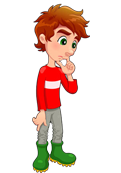

Задание 2. Анимированный ролик
В рамках второго задания необходимо создать анимированный ролик с базовым размером 200 x 200 пикселей.
При наведении курсора на изображение появляется мяч, который облетает мальчика по часовой стрелке и останавливается справа от него на уровне ног.



Где мяч?
Это кирпич!
Анимация реализована средствами CSS с использованием свойства offset-path.